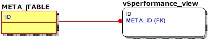

OverviewThis will be explained beforehand.
For internal monitoring of Altibase, it is necessary to understand meta table, and performance view, called the data dictionary. In this document, the relationship between the meta table and the performance view is expressed using the entity-relationship diagram (ERD) in consideration of user understanding and convenience. We will explain what needs to be know prior to this.
About ERD Notation
In consideration of the user's understanding and convenience, the performance view characteristics that do not have a base table are ignored, and the performance view is expressed as a table as shown below, and the key to be referenced when joining is express in FK form. To avoid confusion caused by this notation, the meta table has a yellow background and the performance view has a white background.

In addition, in the above ERD, a column of the same attribute, such as the ID columns of the meta table and the META_ID column of the performance view, may have different name according to the meta table and the performance view. In this case, the same color is given to the column to indicate the same attribute.
Note
It should be noted that Altibase meta table and performance view have the following characteristics.
Column of the same attribute may have different name according to meta table and performance views.
Depending on the Altibase server version, the column name of meta table and performance view can be changed or deleted.
Meta table and performance view may be added or deleted depending on the Altibase server version.
Terms
This is a definition of some of the terms that may cause confusion prior to explanation.
Session
This refers to the user's access unit connected to the Altibase server. One user can have multiple sessions at the same time
Statement
As a term that means each SQL executed in a transaction, 'SQL statement', 'Query', 'Query statement,' often has the same meaning depending on the context. In this document, it is unified as 'query'.
Memory DB GC (Garbage Collector) or GC
When the user executes commit, the record before the change maintained by the MVCC (Multi Versioning Concurrency Control) technique should be deleted. Altibase operates separate threads to delete records before changes, which are called memory DB GC and disk DB GC respectively. However, since the MVCC method of the disk DB has changed since Altibase 5.3.3, the disk DB GC disappears, so only the memory DB GC exists, so it is called GC or Ager.
{kind=link}